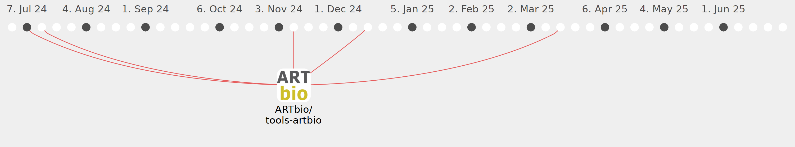

drosofff

Commits all-time: 2007
Commits last year: 41

(41)
- 8cca5f0
- 37c0f09
- 8aeebdd
- 488408c
- 595f5c9
- f8dffb8
- 5fe46b9
- 2695463
- 455c6bb
- 5097c83
- a4201d3
- 41664be
- 8179f82
- c5b2e91
- eb614f4
- 78050d9
- 4e5af87
- 0c4a3bb
- 44d7e10
- dc6b206
- 5151cde
- 023776e
- 3960c84
- 1573c4d
- 813fae0
- 43061f8
- 2be4f75
- 6814223
- 9286176
- 522b03b
- 743cf25
- 0d1ea42
- 9ab8243
- e4a478b
- 311cb2c
- 3a8b848
- 7343be2
- ae36c63
- b391b0f
- 080b69b
- e337614